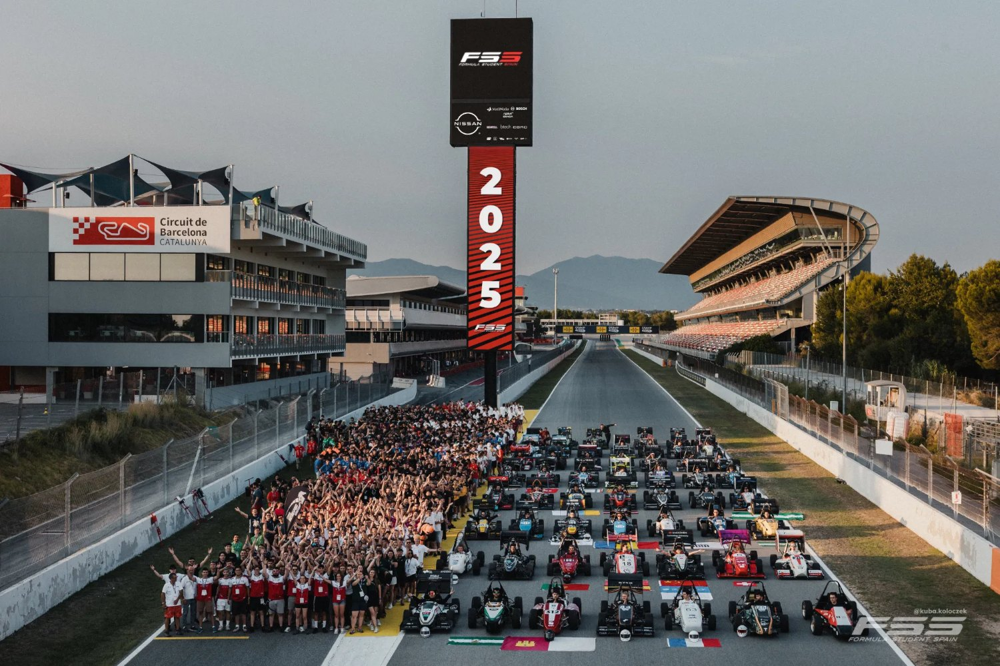
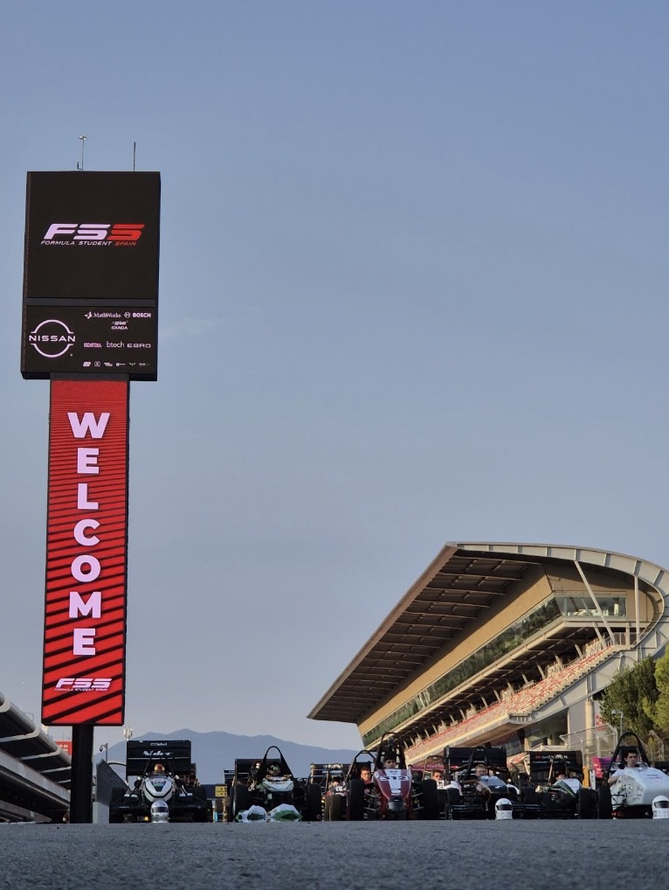
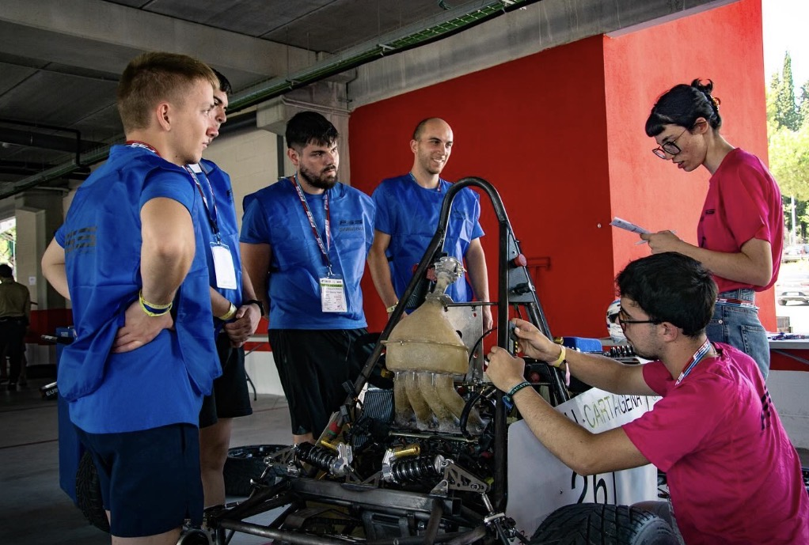
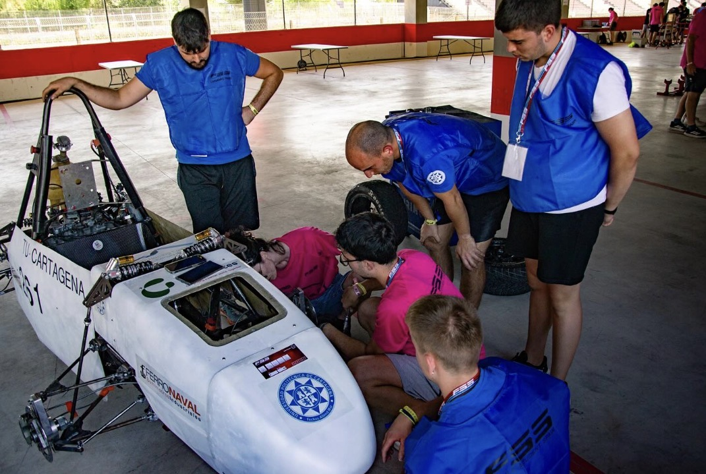
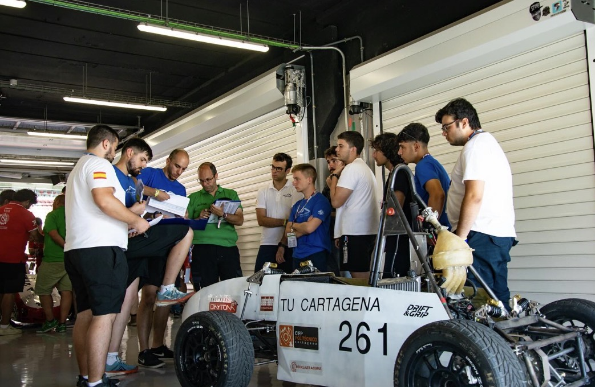
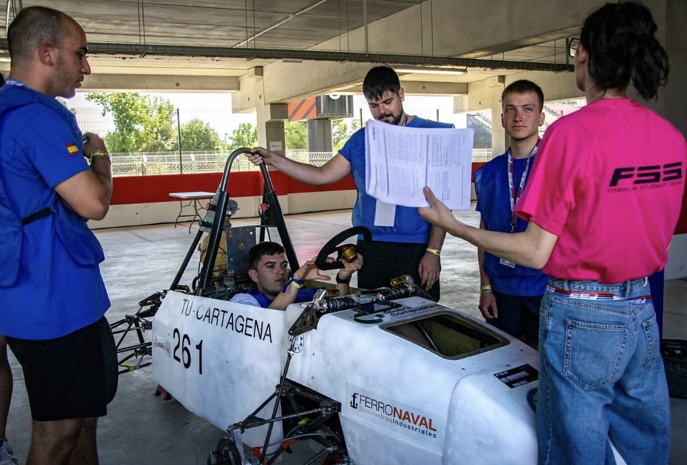
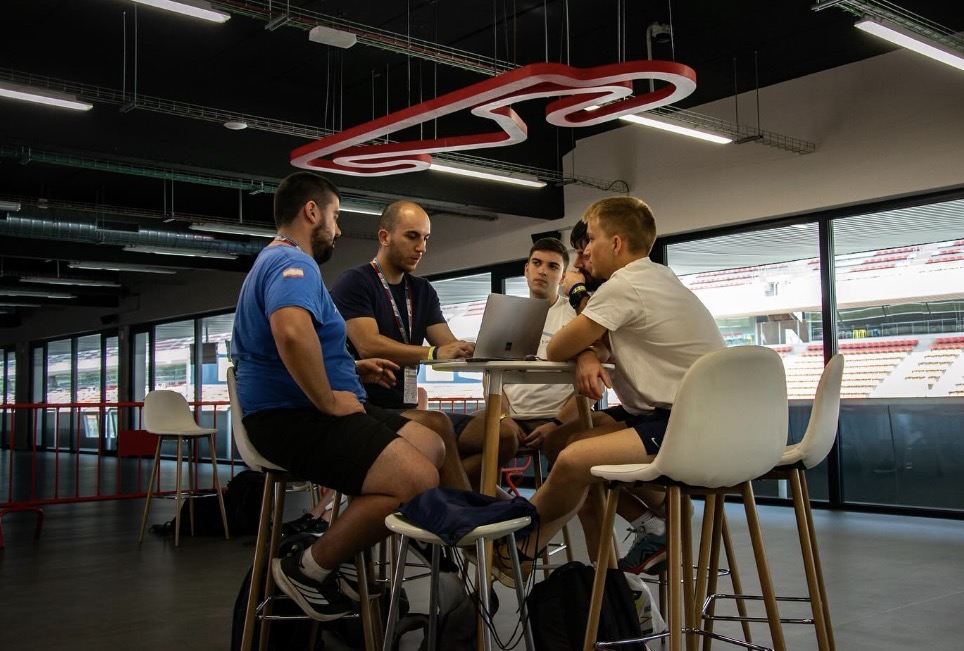
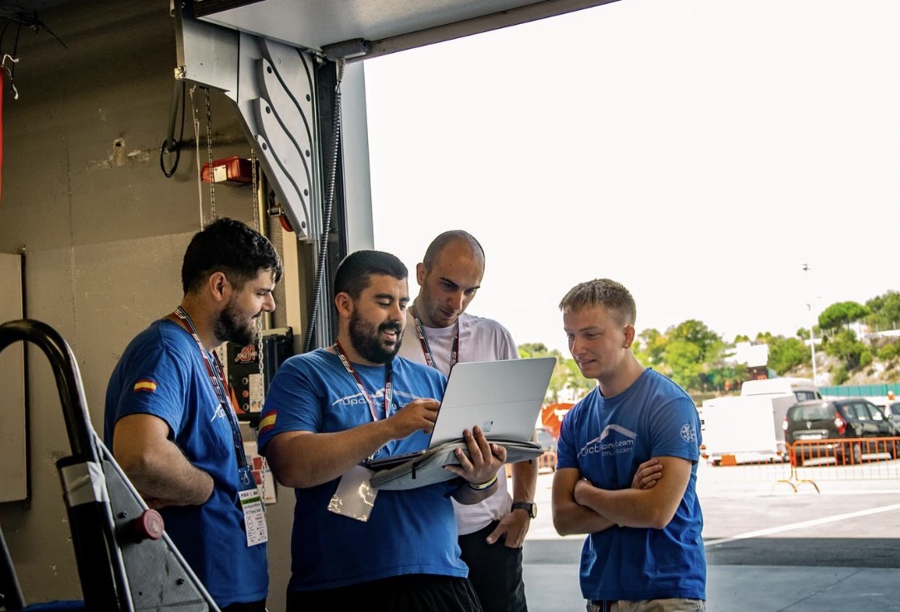

Formula Student
Competición
La competición universitaria de ingeniería en la que el UPCT Racing Team diseña, construye y compite con su monoplaza.

¿Qué es Formula Student?
Formula Student es una competición internacional de ingeniería entre universidades. Cada equipo diseña, fabrica y pone a punto un monoplaza de carreras y lo defiende ante jueces expertos, tanto en la teoría como sobre la pista.
No gana solo el coche más rápido: gana el equipo que mejor combina diseño, costes, plan de negocio y rendimiento en pista.
Cómo se puntúa
Pruebas estáticas y dinámicas
Los equipos suman puntos en dos tipos de pruebas: las que se evalúan ante un jurado y las que se disputan en pista.
Estáticas
Ante el juradoDiseño de ingeniería
Expertos de la industria evalúan las decisiones técnicas del coche y cómo las defiende el equipo.
Costes y fabricación
El equipo analiza cuánto cuesta su monoplaza y cómo se fabrica, y lo documenta en un informe de costes.
Plan de negocio
Una presentación breve ante un jurado que hace de empresa: por qué el diseño del equipo es la mejor propuesta y cómo podría comercializarse.
Inspección técnica y de seguridad
Antes de salir a pista, el coche debe superar las revisiones técnicas y de seguridad que marca el reglamento.
Dinámicas
El coche en pistaAceleración
Una salida en línea recta que mide lo rápido que acelera el coche.
Skidpad
Un recorrido en forma de ocho, marcado con conos, que mide el agarre lateral del coche.
Autocross
Una vuelta rápida a un circuito con curvas: pone a prueba la conducción, la frenada y la aceleración.
Eficiencia
Valora el consumo de combustible o de energía del coche.
Resistencia
La prueba de fondo y la que más puntos reparte: el coche debe demostrar velocidad y fiabilidad durante muchos kilómetros.








Objetivo educativo
Una escuela de ingeniería fuera del aula
Formula Student busca que los estudiantes apliquen lo que aprenden en la carrera a un proyecto real, de principio a fin. Por el camino desarrollan habilidades que valoran las empresas: trabajo en equipo, gestión de proyectos, control de presupuestos y comunicación.
Los jueces son profesionales de la industria del automóvil, del motorsport y de sus proveedores. Según la competición, existen categorías para coches de combustión, eléctricos y de conducción autónoma (driverless).
Cómo participan las universidades
-
Diseñar y construir
El equipo desarrolla su monoplaza siguiendo el reglamento que publica cada año la organización.
-
Inscribirse y documentar
Se inscribe en la competición y entrega documentación previa, como los informes de diseño y de costes.
-
Pasar la inspección
Ya en el evento, el coche debe superar las revisiones técnicas y de seguridad.
-
Competir y sumar
Se puntúan las pruebas estáticas y dinámicas. Gana el equipo que más puntos suma.
El UPCT Racing Team
En la competición
- Competición
- Formula Student Spain 2027 · Barcelona
- Categoría
- Combustión
Competiciones y fuentes oficiales
- Formula Student — Institution of Mechanical Engineers (IMechE), organizadora de Formula Student en el Reino Unido (se abre en una pestaña nueva)
- Formula Student Germany — competición anual en Hockenheim (se abre en una pestaña nueva)
- Formula Student Spain — Circuit de Barcelona-Catalunya (Montmeló), organizada por la Sociedad Técnica del Automóvil (se abre en una pestaña nueva)